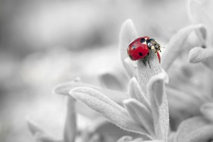
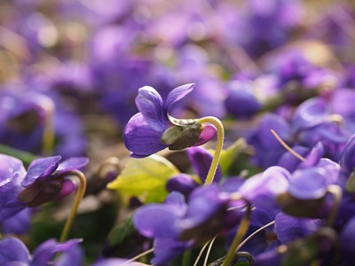
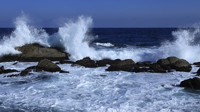
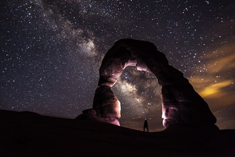

Любов до природи
Автори: Делія Стейнберг Гусман
Розуміти Природу
Наш намір — збудити повагу до Природи як такої за її життєдайність та на знак вдячності їй за все: від нашого фізичного існування до надзвичайних послань мудрості, що їх вона звідомляє нам щомиті.
Природа — це не тільки якесь «середовище», декорація, звідки ми беремо найнеобхідніші елементи для існування. Це жива велика істота, яку важко пізнати в її величі та розмаїтості і яка, своєю чергою, містить в собі незліченні форми існування, серед котрих і ми, люди. Неможливо шанувати Природу, маючи себе та деяких інших живих істот за щось окремішнє; мовляв, Природа — це одне, а ми — дещо іншого. Чи належать до неї камені, рослини і тварини, а також незчисленні небесні світи?
Де ж бо тепер наша здатність вчитися у живої Природи? А втім, як у неї вчитися, якщо ми не визнаємо своєї належності до неї? Як нам поєднатися з чимось, що для нас чуже? Як зрозуміти її научання, якщо ми від початку ставимо себе поза цією єдністю? Так, Природа сповнена неоціненних зразків, але треба поринути в неї і вчитуватися, попри всі наявні книжки, в те, що являє нам саме вона. Часто-густо душі бракує цієї іншої лектури — мовчазної, простої, де слова зайві, бо тут являють себе ідеї. Коли ми заходимо в контакт з Природою, стається це диво: за відсутності слів з’являються ідеї, давніші й нові, які дедалі глибше укорінюються в серці того, хто відчуває, що, попри всі зміни, що стались у світі, на Землі, яка дає нам прихисток, Природа завжди була і завжди буде.
Гора і скеля промовляють
Годі описати всю велич гір, суворих і безплідних, що приголомшують своєю вишиною і тішать око зеленню дерев… Вони промовляють мовою сталості, постійності, одвічного знання.
Водночас наші очі вабить і райдужний, вогкий камінець на березі моря на осонні. Ми підіймаємо цей барвистий, сяйливий скарб, але увечері, намацавши його, забутого, в кишені, бачимо нараз лише тьмяний камінчик, що не вирізняється якоюсь вишуканістю. Не викидай його, бо в ньому наука! Візьми його знову до моря, поклади на осонні, і знову перед тобою постане диво його краси. А хіба ми не могли б вчинити так само, як цей камінчик? Хіба ми не могли б поновити свою красу, свою етику і свою естетику, увійшовши в контакт з тим, що випромінює наше світло, а не марніти й далі в тіні невідання?
Дерево і фіалка промовляють
Кожна рослина щось нам оповідає про себе, про свій спосіб життя — від маленької і непоказної, що ховається між каміння чи зачаїлася в якійсь печері, до крислатого дерева з густою кроною і рясними плодами. З ними треба вміти розмовляти: дерево розповість нам про своє призначення і про свою втіху від пристосування до пір року, засвідчивши тим, що життя триває попри всі зміни; рослина навчить нас постійності, аби ми виконували своє призначення на своєму місці. І дерево, і кущик чіпляються за землю і тягнуться до неба.
Море і вітер промовляють
Що сказати про море? Воно неозоре й могутнє, ласкаве та люте, але кориться вітрові і дослухається до голосу, який змушує його клекотіти або завмерти у штилі.
Це не його примхи; це незнаний нам закон. Чи дослухаємося ми до голосу вітру, аби чинити його волю, чи просто віддаємося на волю хаотичних порухів наших емоційних вітрів, для яких не існує вищого правила, ніж егоїстична втіха? Яка різниця між цими вітрами? Різниця та, що вітри Природи, буревійні чи легкокрилі, завжди додержують певного ритму. Придивімось до ритмічності хвиль, хай які вони великі; розбурхані, вони накочуються на берег, де знову коряться землі чи скелі, розбризкуючись піною; але набігають вони ритмічно, послідовно, співаючи своїх пісень.
Тварини промовляють
Про тварин та про те, чого вони можуть нас навчити, можна писати й писати. Деяких тварин ми просто не годні зрозуміти або ж вони видаються нам доволі дикими, аби наважитися наблизитись до них; з іншими ми заприязнилися, і вони навчилися жити нашим життям, намагаючись вгадувати наші почування і привертати до себе нашу увагу. Чи здатні ми великодушно й безкорисливо повертати те, що ці одомашнені істоти дають нам? Чи тішимося почуттям своєї «вищості»? Деякі тварини визнали нас за своїх володарів, за своїх богів, а відтак обожнюють нас; часом вони бувають примхливі, але зрадливі — майже ніколи.
Сьогодні я бачила чорного кота з жовтими очима, що дрімав вигріваючись на камені. Я проминула його, нявкнувши, щоб передратувати; він підняв на мене очі і відразу відповів. Та не так повелося мені з продавчинею у крамничці, куди я зайшла купити продуктів…
Небо і зорі промовляють
Є небо, яке щоранку прояснюється, являючи нам диво дивне на сході Сонця. І є небо, що міниться фіалковими барвами навзаході Сонця. А ще нічне небо — місячне чи безмісячне, захмарене чи ясне, — всіяне стало розташованими зорями, що водять світовий танок, якого ми не розуміємо, але інтуїтивно відчуваємо.
Наше внутрішнє життя можна уподібнити до нічного неба; саме через відсут- ність Сонця ми вимушені шукати інше сяєво, інші світила на дні душі, віднаходити свої зорі, адже Сонце для нас є енергією, що уможливлює життя.
Зорі дають нам знати, які ми є: і не великі, і не малі. Ми, як вони; все залежить від того, хто на нас дивиться, а відтак визначає нас так чи так.
Власне, зорі промовляють про неозорість і звіряються перед нами, розширюючи наші можливості… І я питаюся, чи й на інших зорях теж існують істоти, що живуть, як ми, у сподіванні осягти своє призначення.
Отож, читати в Природі нескладно, коли сам належиш до цієї книги і коли зчаста власним життям пишеш рядок за рядком або лишаєш цятку світла в небі.
Природні катаклізми
Останні роки, на лихо людству, позначені всілякими катаклізмами: торнадо, урагани, циклони, великі зливи, повені, виверження вулканів, буревії…
Тож постає запитання: чому? Чому відбуваються ці явища, та ще й там, де вони завдають найбільшої шкоди?
Не слід вважати, що ці феномени є витвором винятково нашої доби. Їх ніколи не бракувало, просто вони пішли в непам’ять; ті далекі в часі стихійні лиха сьогодні помилково вважають міфами. Власне, хіба не кривавими були ті катаклізми, які позначали перехід від одного періоду до іншого в довгій історії планети? Маємо лиш фрагменти оповідей про давні континенти — Лемурію і Атлантиду, які поглинули вогонь та вода. Як пояснити те раптове обледеніння, що, певне, зненацька заскочило людей і тварин, а декотрі з них взялися кригою, перетравлюючи допіру пережовану траву? Де поділися численні види рослин і тварин? Що сталося з містами, від яких лишилися самі руїни, а іноді і знаку не стало? Маємо тільки перекази про ті часи. Через свій егоцентризм людина вважає сьогочасну проблему унікальною і безпрецедентною, але це не так.
Переклав з іспанської В'ячеслав Сахно